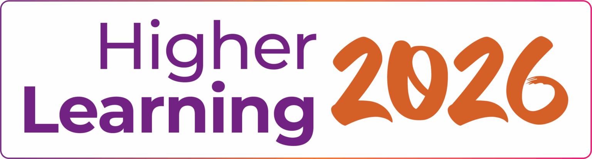

The Future Is the New Now

My father was a Green Beret Command Sergeant Major. That meant we moved. Every two years, sometimes sooner, a new base, a new school, a new set of kids who already had their friend groups sorted and weren't taking applications. Fort Bragg. Fort Carson, Fort Campbell. Fort Hood. Germany twice, once in my Mom's belly. You learn to read a room fast when you're the new kid every twenty-four months. You learn to listen before you talk. You learn that the system, any system, wasn't built for people who don't fit the pattern. You also lament that this your life, not knowing that when you grow up it will help hone your superpower, making friends.
I didn't go to college. Not because I couldn't. Because by the time the recruiter pitch came around, I'd already found the thing that would teach me more than any lecture hall could. In 1985, I got my hands on a modem and a phone line, and the internet, such as it was, cracked open like a door into a room I didn't know existed. Bulletin boards. Newsgroups. The sound of a 2400-baud handshake that meant you were connected to someone, somewhere, who knew something you didn't. I was seventeen and I was hooked. Aside from my love of baseball, this new digital frontier quickly became my calling.
By nineteen, I was running an ISP. Not because someone taught me how. Because the internet didn't have a curriculum yet, neither does AI. There was no degree in "build the infrastructure people will need in ten years." There was just the work. Routing tables and DNS configs and late nights troubleshooting why a T1 line was dropping packets at 3 AM and a customer in Greensburg PA was losing his mind. I learned networking by building networks. I learned digital by doing, I learned technology by breaking it and fixing it and breaking it differently.
That's a kind of education. It's just not the kind anyone gives you credit for.
I carry that. Every day. When I sit across from a returning student at Maryville who spent eight years working, raising kids, accumulating skills the transcript can't see, I know that feeling. The feeling of knowing things the system has no vocabulary for. The feeling of walking into a room full of people with credentials and realizing you built half the infrastructure they studied in class, but nobody's going to ask you about that.
So when the Higher Learning Commission invited me to speak at their conference in a few weeks, the irony wasn't lost on me.
HLC is the institution that accredits institutions. They audit universities. Every ten years, they show up and ask the question that should be easy but almost never is: are you actually teaching what you say you're teaching? That's it. That's the whole game. Prove it. Show the evidence. Demonstrate that the outcomes match the promises.
For decades, the answer has been paper. Binders full of rubrics, assessment matrices, curriculum maps painstakingly assembled by faculty committees over months all locked up in a reading room for the accreditors. A cottage industry of compliance. And the uncomfortable truth underneath all of it: most institutions can tell you what they teach but struggle to prove what students actually learned.
The talk is called "The Future Is the New Now." Not because I'm trying to be clever. Because the future isn't coming. It showed up. It's sitting in the lobby. And most of higher education is still debating whether to let it in.
AI doesn't knock politely. It doesn't wait for your strategic plan or your faculty senate vote or your five-year technology roadmap. It arrives, and suddenly the ten-year accreditation cycle that felt like plenty of time feels like a century. Because what happens when AI can assess competency in real time? When it can map every course to every skill to every job outcome, not as a special project, but as the default, as a next generation data asset? When the question "are you teaching what you say you're teaching?" stops being something you answer with a binder and starts being something the data answers every single day?
That's the disruption. Not AI as a tool. AI as the new standard of proof.
Maryville started building for this four years ago. Not because we saw the future more clearly than anyone else. Because we were brave enough to look. Adult learners were falling through every crack in the system, 43 million of them, and the old tools couldn't find them fast enough, evaluate their credits accurately enough, or map their paths quickly enough. We didn't adopt AI. We built on it. There's a difference. One is a coat of paint. The other is a foundation.
Four years in, we have infrastructure most institutions haven't started imagining. We partnered with You.com and achieved higher enterprise-wide AI adoption than any other organization on their platform. Not because we mandated it. Because we trained our own people, faculty, staff, advisors, and gave them a reason to show up. Over 600 AI agents built and used daily inside that platform. Our data stays ours. Our people get access to more than fifteen different models, securely. Six hundred agents. Not purchased. Created. By the people who use them. That's not adoption. That's ownership.
KreditFlow reads transcripts the way a human should but at a speed humans can't. What used to take weeks of manual evaluation, squinting at course descriptions and making judgment calls, now happens in minutes. Skills Intelligence is the translator we never had. It takes apart curriculum piece by piece and maps it to what employers actually hire for, so a student holding a transcript in one hand and a job listing in the other can finally prove they're talking about the same thing. And Pathways? It computes a degree completion route that bends around a working adult's life. Not the other way around.
But here's what I'm going to tell the HLC audience, something that Beth Rudden, CEO/Founder of Bast.ai impressed on me years ago... the thing that matters more than any product demo or architecture slide: Data is an artifact of a human experience. Every enrollment record, every course completion, every credit transfer, every career outcome, that's not a row in a database. That's someone's life. Someone's Tuesday night after the kids went to bed. Someone's decision to try again after the system told her, through silence, that she didn't matter.

When you treat data that way, as sovereign, as sacred, as the red thread that connects a learning community, AI stops being a threat and starts being the thing that finally honors what people actually did. The binder goes away. The ten-year audit becomes a daily conversation. The proof isn't assembled. It's alive.
I'm going to be welcomed in front of a room full of colleagues by our accreditors, the people whose entire job is to verify that institutions deliver on their promises, and tell them that the kid who never went to college built the system that makes verification automatic. That the army brat who moved every two years and learned to make friends and read rooms built something that reads transcripts the way he wished someone had read, and valued his.
The future is the new now. Not because the technology is ready. Because forty-two million people have been waiting long enough.
Speaking at HLC 2026. Want to talk about what comes next? Reach out or join the conversation in Discord.